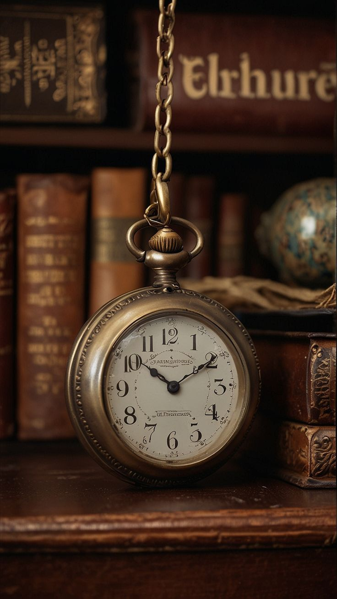
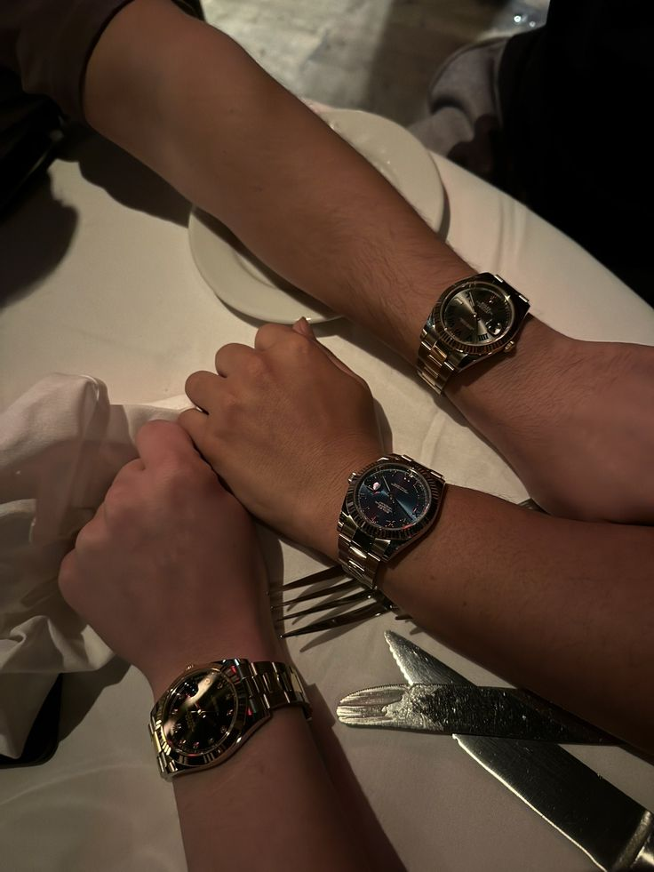

À propos de Nous
Notre Histoire
Chez TimeLux, notre aventure a commencé avec une vision : concevoir des montres qui transcendent le temps et les tendances. Depuis 2018, nous nous sommes engagés à créer des pièces de haute qualité qui allient design intemporel et innovation. Chaque montre que nous fabriquons est le fruit d'un savoir-faire méticuleux, conçue pour accompagner nos clients dans leurs moments les plus précieux, qu'il s'agisse d'une réunion d'affaires, d'un mariage ou d'une simple sortie entre amis. Nous croyons que chaque instant mérite d'être célébré, et nos montres sont là pour en être les témoins, alliant élégance et fonctionnalité tout en respectant des pratiques durables et éthiques.
Notre Mission
Notre mission est de concevoir des montres qui transcendent le temps et les tendances. Nous nous engageons à offrir à nos clients des pièces de haute qualité qui allient design intemporel et innovation. Chaque montre que nous créons est conçue pour accompagner nos clients dans leurs moments les plus précieux, qu'il s'agisse d'une réunion d'affaires, d'un mariage ou d'une simple sortie entre amis.
Nos Valeurs
- Qualité : Nous croyons que chaque montre doit être un symbole de durabilité et de précision. C'est pourquoi nous utilisons uniquement des matériaux de la plus haute qualité et travaillons avec des artisans expérimentés.
- Innovation : Nous nous efforçons de rester à la pointe des tendances tout en respectant notre héritage. Chaque modèle est le résultat d'une recherche constante d'innovation et de créativité.
- Durabilité : En tant que marque responsable, nous nous engageons à minimiser notre impact sur l'environnement. Nous utilisons des matériaux recyclables et adoptons des pratiques de production éthiques.
- Authenticité : Chaque montre que nous créons est unique, tout comme nos clients. Nous valorisons l'authenticité et nous nous efforçons de créer des pièces qui reflètent la personnalité de ceux qui les portent.
Notre Équipe
Notre équipe est composée de passionnés d'horlogerie, d'artisans et de designers qui partagent une vision commune : créer des montres exceptionnelles. Chacun de nos membres apporte son expertise et sa créativité, garantissant que chaque pièce est le fruit d'un travail minutieux et d'une attention particulière aux détails. Nous croyons en la collaboration et en l'innovation, et nous sommes fiers de travailler ensemble pour offrir à nos clients des montres qui ne sont pas seulement des accessoires, mais des compagnons de vie.